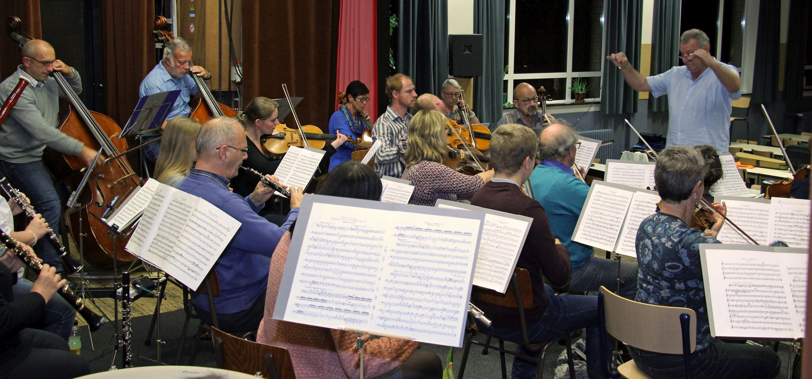

Concerten.

Toekomstige concerten.
FEESTMEDLEY
zaterdag 16 december 2023
Schaliken, Herentals.
Kaarten bestellen.
Alle informatie en bestelling kaarten:
Telefoon: 03 455 65 68
Email: info@herentalssymfonischorkest.be
Bankrekening: BE84 9731 8147 9859 (BIC ARSPBE22)
Vorige concerten.
Enkele sfeer beelden van onze afgelopen concerten.
Golgotha
Werken van Mozart, P. Mascagni, N. Grosemans en Kristiaan De Becker. Met wereldpremière van het oratorium "Golgotha" van Kristiaan De Becker
19 maart 2023 - 15u. - Sint Waldetrudiskerk, 2200 Herentals
Soundtracks
De mooiste filmmuziek uit o.a. Gone with the Wind, Out of Africa, Pirates of the Caribbean, Schindler's List, The Empire strikes back, en nog veel meer
3 december 2022 - 20u. - cc 't Schaliken, Grote Markt 35, 2200 Herentals

Aperitiefconcert
Beethoven - Vioolconcerto in D groot met solist Niels Grosemans
25 september 2022 om 11 u. in de Sint-Niklaaskerk te Morkhoven (Herentals)
Aperitiefconcert
Symfonie nr. 38 "Praagse" van W. A. Mozart en Fagotconcerto in F groot van C. M. von Weber met solist Werner Klein
3 oktober 2021 om 11 u. in de Sint-Niklaaskerk te Morkhoven (Herentals)
Wiener Bonbons
Muziek van o.a. Strauss, Lehár, Kálmán, ...
met sopraan Nathalie Denyft
14 december 2019 - 20u. - cc 't Schaliken, Grote Markt 35, 2200 Herentals
Winterconcert
Op het programma: Judex uit 'Mors et Vita' van Gounod, Onvoltooide Symfonie van Schubert, 2de Pianoconcerto van Chopin met Daniël De Clerck als solist.
9 februari 2019 - 20u. - cc 't Schaliken, Grote Markt 35, 2200 Herentals
Wiener Gala
Met “Wiener Gala” wil het H.S.O. u meevoeren naar de grandeur van de 19de eeuw en de sfeer van het Nieuwjaarsconcert in Wenen.
17 november 2018 - 20u. - cc 't Schaliken Herentals
Aperitiefconcert
Ouvertures "Iphigenia in Aulis", "Coriolanus" en "La Clemenza Di Tito" - Sinfonia concertante van W.A. Mozart met Niels Grosemans en Rita Biasi als solisten.
3 juni 2018 - 11u. - kOsh Campus Herentals
Premières
Nogard van N. Grosemans, Valse Triste van J. Sibelius, Symfonie nr. 1 van L. van Beethoven
12 november 2017 - 11u. - kerk St. Jan de Doper Herentals